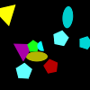
(1)
A yellow triangle is in front of a green shape.
A green shape is not smaller than a blue cross.
A pentagon is a different color from a green semicircle.
A green shape is bigger than a green semicircle.
A yellow pentagon is behind a yellow shape.
(2)
A magenta shape is not smaller than a cyan ellipse.
A cyan shape is behind a yellow shape.
A magenta shape is not a different shape from a magenta circle.
A cyan shape is behind a yellow circle.
A cyan rectangle is not a different shape from a green shape.
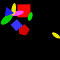
(3)
A triangle is not behind a gray square.
A yellow shape is darker than a triangle.
A semicircle is in front of a gray triangle.
A green shape is the same shape as a triangle.
A triangle is not farther from a gray triangle than a blue triangle.
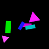
(4)
A yellow shape is not above a gray pentagon.
A red circle is not closer to a cyan shape than an ellipse.
A square is to the left of a pentagon.
A yellow rectangle is not farther from a yellow ellipse than a red square.
A yellow shape is not to the left of a red shape.
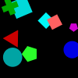
(5)
A pentagon is to the left of a blue shape.
A blue pentagon is to the left of a blue circle.
A green shape is not a different color from a blue pentagon.
A pentagon is not a different color from a cyan circle.
A cross is not closer to a blue triangle than a blue shape.
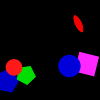
(6)
A cyan shape is not to the right of a green cross.
A triangle is closer to a triangle than a rectangle.
A blue shape is bigger than a rectangle.
A magenta square is not smaller than a triangle.
A blue shape is not the same shape as a cross.
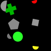
(7)
A gray shape is not in front of a yellow rectangle.
A rectangle is a different color from a gray shape.
A gray rectangle is bigger than a red semicircle.
A red shape is a different color from a square.
A cross is not behind a pentagon.
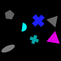
(8)
A magenta shape is a different color from a triangle.
A blue shape is not behind a yellow ellipse.
A magenta shape is not the same color as a magenta triangle.
A triangle is the same color as a yellow shape.
A magenta shape is not above a semicircle.
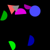
(9)
A gray ellipse is not darker than a red square.
A cyan shape is not lighter than a green cross.
An ellipse is not a different color from a red semicircle.
A blue square is below a green semicircle.
An ellipse is not darker than a gray ellipse.
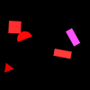
(10)
A cyan shape is the same shape as a green rectangle.
A red shape is not the same shape as a green shape.
A green rectangle is farther from a cyan rectangle than a rectangle.
A blue shape is not a different shape from a green cross.
A green rectangle is not below a pentagon.
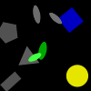
(11)
An ellipse is below a magenta shape.
A magenta square is not to the right of a gray rectangle.
A magenta circle is not behind a green circle.
A rectangle is to the left of a magenta square.
A cyan square is not behind a cyan shape.
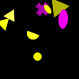
(12)
A gray square is closer to a gray shape than a cyan pentagon.
A triangle is not lighter than a gray square.
A green shape is not behind a gray triangle.
A gray square is not a different color from a triangle.
A rectangle is below a gray shape.
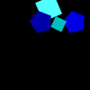
(13)
A yellow square is not a different shape from a red shape.
A circle is not lighter than a green circle.
A pentagon is not behind a magenta circle.
A circle is closer to a circle than a yellow shape.
A gray circle is not behind a blue shape.
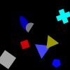
(14)
A circle is lighter than a pentagon.
A yellow shape is closer to a cyan pentagon than a yellow shape.
A magenta shape is not darker than a pentagon.
A magenta shape is not farther from a yellow shape than a square.
A blue shape is not in front of a blue shape.
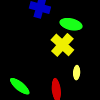
(15)
A square is not darker than a cyan shape.
A red semicircle is lighter than a red semicircle.
A semicircle is above a red semicircle.
A circle is lighter than a red semicircle.
A cyan semicircle is to the right of a semicircle.

(16)
A red shape is not farther from a semicircle than a gray shape.
A cyan shape is not darker than a cyan triangle.
An ellipse is not darker than a blue semicircle.
A blue shape is in front of a red ellipse.
A cyan shape is below a green cross.
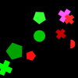
(17)
A green ellipse is not the same color as a square.
A green shape is a different shape from an ellipse.
A blue shape is smaller than an ellipse.
A green triangle is not closer to a red semicircle than a magenta shape.
A green shape is above a red semicircle.
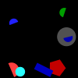
(18)
An ellipse is not farther from an ellipse than a cyan pentagon.
A cyan shape is not smaller than a gray ellipse.
A gray shape is not smaller than a magenta ellipse.
A cyan pentagon is not closer to a square than a gray ellipse.
A gray shape is the same color as a square.
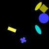
(19)
A blue shape is bigger than a blue triangle.
A cyan shape is smaller than a blue ellipse.
A cyan shape is a different shape from a semicircle.
A circle is not darker than a square.
A cyan circle is not above a cyan ellipse.
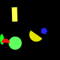
(20)
A pentagon is closer to a magenta triangle than a gray rectangle.
A square is not below a red ellipse.
A red shape is not farther from a cyan pentagon than a gray rectangle.
A red shape is not the same shape as a yellow ellipse.
A rectangle is not closer to a red shape than a cyan pentagon.

(21)
A green pentagon is to the right of a green circle.
A green rectangle is not farther from a blue shape than a rectangle.
A cyan triangle is closer to a yellow rectangle than a cyan pentagon.
A blue shape is smaller than a yellow shape.
A red rectangle is to the left of a green shape.
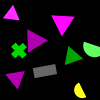
(22)
A magenta square is not to the right of a red square.
A magenta shape is bigger than a yellow square.
A cyan shape is a different shape from a square.
A yellow square is not behind a magenta rectangle.
A square is a different color from a yellow rectangle.
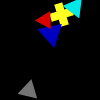
(23)
A gray shape is not bigger than a magenta cross.
A yellow cross is farther from a cyan square than a green shape.
A red semicircle is not below a yellow shape.
A red square is not behind a green ellipse.
A red semicircle is to the left of a square.
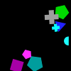
(24)
A magenta shape is to the right of a gray square.
A magenta shape is not a different color from a cyan ellipse.
A gray semicircle is smaller than a magenta shape.
A cyan shape is not a different shape from an ellipse.
A semicircle is bigger than a gray shape.
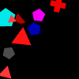
(25)
A rectangle is not the same color as a yellow shape.
A red shape is not behind a yellow semicircle.
A cross is not darker than a blue pentagon.
An ellipse is not a different shape from a cyan shape.
A yellow shape is lighter than a circle.
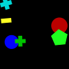
(26)
A circle is not lighter than a rectangle.
A green circle is bigger than a circle.
A cyan shape is behind a triangle.
A square is not smaller than a red shape.
A yellow shape is not the same color as a circle.
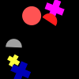
(27)
A gray shape is smaller than a triangle.
A magenta pentagon is below a square.
A cyan circle is not below a red shape.
A circle is farther from a cross than a triangle.
A magenta shape is not farther from a cyan circle than a cross.
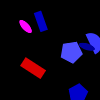
(28)
A pentagon is not darker than a cyan triangle.
A yellow shape is a different shape from a blue triangle.
A red cross is above a cross.
A magenta shape is below a triangle.
A blue triangle is not in front of a rectangle.
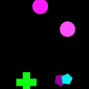
(29)
A yellow semicircle is in front of a yellow shape.
A red shape is below an ellipse.
A magenta pentagon is not below a blue pentagon.
A magenta pentagon is not to the left of a square.
An ellipse is not a different color from a cyan shape.
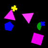
(30)
A triangle is lighter than a cyan triangle.
A cyan triangle is to the right of a triangle.
A green shape is the same color as a triangle.
A triangle is not a different color from a yellow pentagon.
A cyan shape is not above a gray shape.
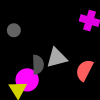
(31)
A magenta circle is not below a cyan ellipse.
A magenta ellipse is lighter than a cyan rectangle.
A cyan shape is below an ellipse.
A magenta shape is not closer to a cyan shape than a gray square.
A rectangle is behind a gray rectangle.
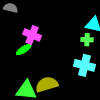
(32)
A green shape is closer to a yellow circle than a gray shape.
A green shape is a different shape from a circle.
A green pentagon is lighter than a green shape.
A circle is lighter than a green cross.
A circle is not farther from a green cross than a gray shape.
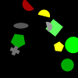
(33)
A pentagon is a different color from a triangle.
A cyan semicircle is the same shape as a cyan shape.
A cyan semicircle is not bigger than a cyan triangle.
A cyan pentagon is to the left of a cyan pentagon.
A cyan pentagon is not to the left of a cyan semicircle.
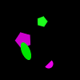
(34)
A cyan shape is not smaller than a blue shape.
A cyan shape is not bigger than a triangle.
A green shape is not a different shape from a rectangle.
A rectangle is the same color as a red shape.
A red shape is not smaller than a green cross.
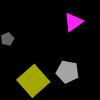
(35)
A cross is the same color as a cyan cross.
A yellow shape is not above a yellow cross.
A semicircle is the same color as a cyan cross.
A yellow shape is in front of a green cross.
A cross is not below a rectangle.
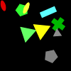
(36)
A magenta square is darker than a rectangle.
A square is in front of a magenta shape.
A rectangle is not to the left of a magenta semicircle.
A semicircle is darker than a magenta shape.
A red shape is not a different shape from a semicircle.
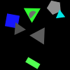
(37)
A yellow shape is behind a square.
A gray shape is above a square.
A gray shape is to the right of a rectangle.
A red rectangle is below a rectangle.
A red square is not a different shape from a yellow shape.
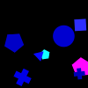
(38)
A rectangle is smaller than a cyan shape.
A cyan circle is not the same color as a rectangle.
An ellipse is not to the left of a green circle.
A rectangle is not the same color as a magenta ellipse.
A cyan shape is not the same shape as a cross.
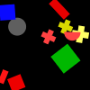
(39)
A yellow shape is not to the right of a magenta pentagon.
A rectangle is not darker than a green pentagon.
A green shape is not above a cyan rectangle.
A green rectangle is not below a cyan shape.
A green shape is not a different shape from a yellow semicircle.
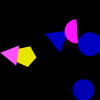
(40)
A gray triangle is closer to a magenta cross than a magenta ellipse.
A magenta ellipse is farther from a triangle than a magenta cross.
An ellipse is darker than a magenta ellipse.
A triangle is not the same color as a magenta shape.
A blue shape is smaller than a triangle.
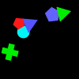
(41)
A cross is not below a yellow triangle.
A circle is not above a yellow cross.
An ellipse is a different color from a cyan shape.
A cyan pentagon is not closer to a magenta shape than a cyan square.
A yellow cross is not below a yellow triangle.
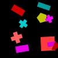
(42)
A triangle is not in front of a red circle.
A gray semicircle is closer to a red circle than a circle.
A blue shape is to the left of a cyan pentagon.
A gray triangle is not above a red circle.
A magenta semicircle is not bigger than a yellow triangle.
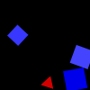
(43)
A cross is farther from a red rectangle than a rectangle.
A cyan semicircle is not in front of a green cross.
A cyan semicircle is the same color as a rectangle.
A green shape is smaller than a green rectangle.
A magenta rectangle is not a different shape from a rectangle.

(44)
A triangle is lighter than a blue triangle.
A blue triangle is to the right of a cross.
A blue shape is closer to a magenta semicircle than a blue triangle.
A blue semicircle is lighter than a blue triangle.
A triangle is farther from a triangle than a semicircle.
(45)
A green pentagon is not to the left of a blue triangle.
A cyan square is to the right of a gray semicircle.
A cyan square is not closer to a green pentagon than a circle.
A semicircle is not darker than a cyan triangle.
A red triangle is not to the left of a red shape.
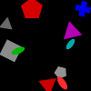
(46)
A gray shape is not lighter than a cross.
A yellow shape is bigger than a red circle.
A gray circle is not to the right of a rectangle.
A triangle is darker than a green shape.
A triangle is not lighter than a blue circle.
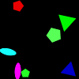
(47)
A magenta triangle is behind a green ellipse.
An ellipse is not below a cyan shape.
A magenta shape is smaller than a green triangle.
A red pentagon is to the right of a triangle.
A gray ellipse is farther from a pentagon than a triangle.
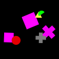
(48)
A green shape is bigger than a green ellipse.
A green pentagon is not closer to a circle than a red shape.
An ellipse is darker than a green pentagon.
A green shape is not bigger than a yellow shape.
A green circle is not below a red shape.
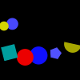
(49)
A gray semicircle is not farther from a semicircle than a cyan pentagon.
A cross is not behind a gray semicircle.
A cyan semicircle is not smaller than a gray shape.
A cyan semicircle is not below a gray shape.
A green semicircle is not bigger than a magenta shape.
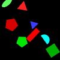
(50)
A red shape is not to the left of a cyan semicircle.
A green shape is to the right of a red pentagon.
A green shape is to the right of a blue semicircle.
A blue shape is bigger than a green rectangle.
A green pentagon is not above a semicircle.
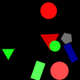
(51)
A gray shape is not lighter than a circle.
A square is not lighter than a circle.
An ellipse is to the right of a blue circle.
A gray cross is not bigger than a green shape.
A magenta shape is behind a gray square.
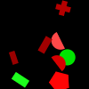
(52)
A cyan cross is not farther from a red circle than a green shape.
A cyan shape is not behind a blue triangle.
A semicircle is not darker than a cyan circle.
A circle is lighter than a blue shape.
A gray square is a different color from a circle.
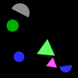
(53)
A green semicircle is not below a yellow semicircle.
A semicircle is not a different color from a yellow ellipse.
A blue pentagon is not closer to a yellow ellipse than a red shape.
A gray shape is farther from an ellipse than a semicircle.
A red shape is not smaller than a yellow semicircle.
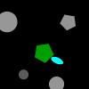
(54)
A gray cross is smaller than a yellow cross.
An ellipse is not the same color as a green triangle.
A green triangle is not in front of a green shape.
A yellow cross is not below a gray shape.
A yellow cross is farther from a green shape than a gray shape.
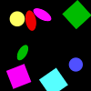
(55)
An ellipse is not a different color from a cyan shape.
A green pentagon is not to the left of a yellow cross.
A green shape is not the same shape as a cyan cross.
A green rectangle is a different color from a cross.
A circle is darker than a cyan shape.
(56)
A triangle is lighter than a green square.
An ellipse is not a different color from a green cross.
A rectangle is not in front of an ellipse.
A green shape is not bigger than a pentagon.
A green cross is closer to a green pentagon than an ellipse.
(57)
A semicircle is not darker than a cyan triangle.
A gray shape is not to the right of a blue square.
A blue square is not to the left of a circle.
A red square is not to the right of a blue ellipse.
A blue square is not to the left of a blue circle.
(58)
A blue circle is darker than a blue shape.
A rectangle is not below a gray circle.
A rectangle is not in front of a blue circle.
A yellow shape is the same shape as an ellipse.
An ellipse is lighter than a yellow shape.
(59)
A cyan triangle is below a yellow semicircle.
A square is not above a cyan semicircle.
A blue shape is the same shape as a gray triangle.
A triangle is not to the right of a yellow shape.
A triangle is not a different color from a yellow shape.
(60)
A magenta semicircle is not to the left of a square.
A magenta square is above a magenta pentagon.
A semicircle is not the same color as a magenta shape.
A magenta square is above a magenta shape.
A magenta square is closer to a magenta semicircle than a magenta square.
(61)
A yellow square is closer to a triangle than a green shape.
A blue shape is bigger than a green triangle.
An ellipse is not darker than a cyan shape.
A gray triangle is above a green triangle.
A triangle is a different color from a cyan ellipse.
(62)
A triangle is lighter than a gray shape.
A rectangle is a different color from a magenta circle.
A gray rectangle is not in front of a red triangle.
A gray circle is not smaller than a magenta triangle.
A red circle is not behind a gray rectangle.
(63)
A green circle is not to the right of a semicircle.
A red semicircle is bigger than a green circle.
A green pentagon is below a red semicircle.
A green shape is not a different shape from a triangle.
A red shape is the same shape as a green circle.
(64)
A magenta shape is not bigger than a triangle.
A rectangle is the same color as a cyan semicircle.
A green ellipse is farther from a cyan semicircle than a gray rectangle.
A semicircle is below a yellow square.
A red shape is closer to a yellow rectangle than a green square.
(65)
A yellow shape is the same shape as a blue square.
A yellow pentagon is not closer to a cross than a green shape.
A red circle is not above a pentagon.
A blue shape is the same shape as a green square.
A square is not to the left of a cross.
(66)
A cross is behind a cyan semicircle.
A green shape is not to the left of a cyan semicircle.
A green cross is not behind a cyan semicircle.
A cross is not to the left of a magenta shape.
A green shape is not the same shape as a magenta square.
(67)
A gray ellipse is not bigger than a semicircle.
A circle is not a different color from a red shape.
A square is not below a red shape.
A yellow square is not smaller than a cyan shape.
A red ellipse is the same shape as a yellow shape.
(68)
A red cross is not to the right of a cyan circle.
A blue semicircle is darker than a cross.
A yellow semicircle is the same shape as a yellow shape.
A triangle is above a cross.
An ellipse is not above a blue cross.
(69)
A blue shape is above a semicircle.
A magenta semicircle is a different shape from a rectangle.
A magenta semicircle is a different shape from a blue shape.
A blue shape is not the same shape as a cyan shape.
A yellow rectangle is farther from a green shape than a magenta semicircle.
(70)
A gray ellipse is not closer to a red pentagon than a magenta shape.
A red shape is the same shape as a magenta cross.
A magenta shape is the same shape as a red pentagon.
A cross is the same color as a gray pentagon.
A semicircle is not to the right of a pentagon.
(71)
A gray shape is farther from a yellow triangle than a magenta square.
A semicircle is not closer to a yellow shape than a magenta cross.
A magenta shape is lighter than a square.
A rectangle is above a magenta square.
A red shape is above a magenta square.
(72)
A yellow shape is to the right of a blue shape.
A green shape is farther from a pentagon than a green square.
An ellipse is the same color as a green square.
A cross is a different color from a yellow semicircle.
A green square is not lighter than a magenta shape.
(73)
A circle is to the left of a blue triangle.
A red shape is not in front of a circle.
A blue circle is farther from a yellow shape than a blue triangle.
A triangle is the same shape as a yellow shape.
A blue triangle is not closer to a yellow shape than a circle.
(74)
A red ellipse is not to the right of a green shape.
A triangle is the same color as a magenta shape.
A cyan pentagon is not smaller than a green shape.
A cyan triangle is not a different color from a pentagon.
A semicircle is not a different color from a magenta triangle.
(75)
A yellow ellipse is not to the left of a gray shape.
A square is lighter than a red shape.
A yellow shape is to the left of a red pentagon.
A circle is not above a gray shape.
A pentagon is a different color from a red pentagon.
(76)
A pentagon is not below a red square.
A cyan square is not in front of a cyan shape.
A red square is farther from a red shape than a cyan semicircle.
A red shape is not the same shape as a green cross.
A cyan shape is bigger than a magenta cross.
(77)
A cyan shape is behind a blue circle.
A blue circle is to the left of a magenta shape.
A green shape is to the right of a circle.
A blue circle is in front of a cyan shape.
A cyan semicircle is not closer to a blue shape than a magenta shape.
(78)
A yellow square is not below a gray shape.
A rectangle is not to the right of a blue square.
A cyan shape is a different shape from a cyan square.
A gray semicircle is bigger than a cyan semicircle.
A cyan square is not bigger than a blue shape.
(79)
A gray rectangle is not behind a cross.
A semicircle is not to the right of a yellow circle.
A gray shape is not the same color as an ellipse.
An ellipse is behind a red triangle.
A yellow shape is not to the left of a pentagon.
(80)
An ellipse is not a different color from a magenta ellipse.
A blue circle is not below a magenta ellipse.
A green triangle is not closer to a yellow pentagon than a cyan shape.
A triangle is below a yellow shape.
A magenta shape is not smaller than a red ellipse.
(81)
A pentagon is lighter than a yellow shape.
A square is a different color from a yellow shape.
A yellow rectangle is above a blue circle.
A yellow square is in front of a blue shape.
A circle is lighter than a yellow ellipse.
(82)
A green shape is a different color from a rectangle.
A magenta cross is above a green shape.
A cyan rectangle is farther from a magenta shape than a green rectangle.
A green shape is above a magenta cross.
A square is not in front of a rectangle.
(83)
A gray shape is not a different shape from a blue semicircle.
A gray shape is not behind a blue shape.
A triangle is closer to a green shape than a gray rectangle.
A blue semicircle is not in front of a blue ellipse.
A green ellipse is below a semicircle.
(84)
A gray rectangle is lighter than a circle.
A gray shape is the same color as a gray rectangle.
A magenta rectangle is not behind a triangle.
A blue circle is not behind a yellow cross.
A yellow circle is not darker than a triangle.
(85)
A green shape is the same shape as a yellow semicircle.
A triangle is a different color from a yellow semicircle.
A yellow semicircle is not closer to a cross than a red pentagon.
A semicircle is the same color as a yellow cross.
A red shape is to the right of a yellow cross.
(86)
A magenta circle is not closer to a yellow circle than a red shape.
A gray shape is below an ellipse.
A magenta shape is not bigger than a circle.
A magenta circle is a different shape from a red shape.
A cyan shape is closer to an ellipse than a red triangle.
(87)
A blue circle is behind a yellow shape.
A red shape is a different shape from a blue shape.
A yellow shape is not above a green rectangle.
A gray shape is not a different shape from a circle.
A blue shape is not smaller than a rectangle.
(88)
A blue shape is not bigger than a pentagon.
A rectangle is a different color from a blue ellipse.
A gray shape is the same shape as a gray rectangle.
A cyan shape is not closer to a square than a gray rectangle.
A pentagon is closer to a gray shape than a gray rectangle.
(89)
A red circle is closer to a magenta semicircle than a red semicircle.
A semicircle is not the same color as a red circle.
A triangle is to the left of a circle.
A cyan shape is not to the left of a red semicircle.
A gray circle is a different color from a semicircle.
(90)
A semicircle is the same color as a cyan shape.
A yellow shape is not to the right of a cyan semicircle.
A magenta semicircle is not bigger than a cyan shape.
A cyan shape is a different shape from a semicircle.
A cyan semicircle is not closer to a red shape than a magenta semicircle.
(91)
A cyan square is not the same color as an ellipse.
An ellipse is not lighter than a green square.
A green shape is farther from a red square than a cyan square.
A cyan shape is not smaller than a green square.
A red square is to the left of a square.
(92)
A magenta cross is not lighter than a magenta semicircle.
A cyan square is to the left of a gray triangle.
A cross is not a different color from a gray pentagon.
A yellow shape is farther from a cross than a cyan cross.
A semicircle is not a different color from a magenta shape.
(93)
A semicircle is not a different color from a magenta shape.
A red triangle is not the same color as a pentagon.
A magenta shape is lighter than a cyan ellipse.
A cyan ellipse is to the right of a square.
A blue triangle is not darker than a gray ellipse.
(94)
A yellow triangle is smaller than a triangle.
A square is closer to a blue semicircle than a circle.
A triangle is lighter than a red triangle.
A cross is the same color as a red triangle.
A triangle is not farther from a square than a red semicircle.
(95)
A yellow shape is a different shape from a blue ellipse.
A square is closer to a blue triangle than a red shape.
A blue ellipse is bigger than an ellipse.
A cyan shape is not a different shape from a gray triangle.
A blue ellipse is above a triangle.
(96)
A green shape is not lighter than a blue rectangle.
A rectangle is lighter than a blue circle.
A green rectangle is below a blue rectangle.
A blue circle is to the left of a blue semicircle.
A yellow shape is the same shape as a rectangle.
(97)
A circle is darker than a green cross.
A square is not the same color as a blue shape.
A cyan shape is the same shape as a blue square.
A green cross is to the right of a cross.
A green square is not in front of a blue circle.
(98)
A cross is the same color as a red shape.
A blue square is not behind a yellow circle.
A blue shape is above a circle.
A blue shape is the same shape as a magenta circle.
A rectangle is not to the right of a pentagon.
(99)
A gray shape is not darker than a triangle.
A red circle is not smaller than a green shape.
A green shape is not the same shape as a circle.
A red shape is above a green triangle.
A red circle is in front of a gray circle.
(100)
A yellow ellipse is not lighter than a yellow shape.
A red shape is not the same shape as a yellow square.
A square is smaller than a red shape.
A square is not to the right of a red shape.
An ellipse is the same color as a yellow square.